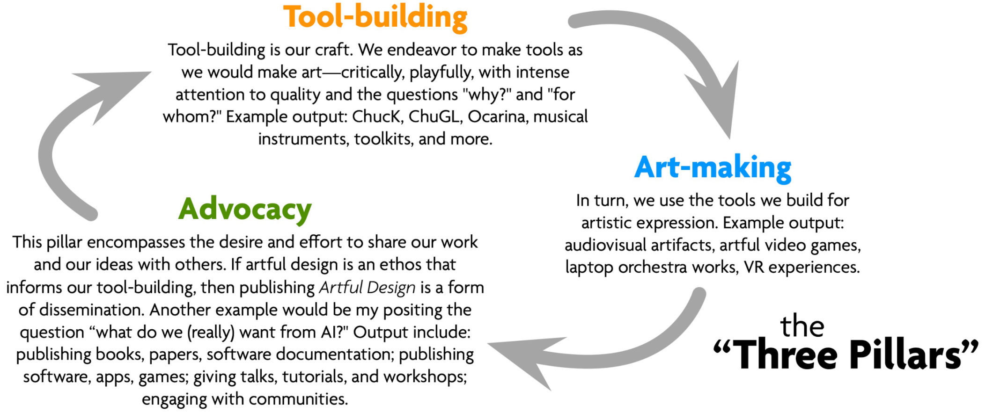

This portfolio contains the major initiatives that comprise my work. It focuses mostly on my post-tenure output (since 2016), with references to earlier works as appropriate. For example, research on the ChucK audio programming language now spans more than 20 years (all the way back to grad school), and is presently experiencing its most vibrant period of development—and the largest and the healthiest the ChucK ecosystem and user community have ever been. The ChucK language, in turns, supports the other initiatives: laptop orchestra, VR design lab, and pedagogy. These are unified by artful design as an ethos of aesthetics-driven, playful, humanistic tool-building.
The portfolio is organized by these initiatives, starting with artful design both as a philosophical framework and an artifact in itself. While each of these research directions have their own identity, they are strongly interconnected. Furthermore, they share an underlying model of research that we have adopted and honed in my research group, characterized by three core types of activities that we consider to be indispensable to our identity. Coarsely termed "tool-building", "art-making", and "advocacy", they are our "Three Pillars" of research.

My students and I endlessly cycle between (and often conjoin) these three types of activities, where each pillar affords the capacity for craft, reflection, and critical provocation.